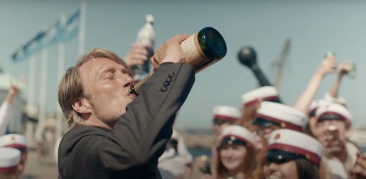

UN ALTRO GIRO
Thomas Vinterberg

C’è una teoria secondo la quale tutti noi siamo nati con una piccola quantità di alcool già presente nel sangue e che, pertanto, una piccola ebbrezza possa aprire le nostre menti al mondo che ci circonda, diminuendo la nostra percezione dei problemi e aumentando la nostra creatività. Rincuorati da questa teoria, Martin e tre suoi amici, tutti annoiati insegnanti delle superiori, intraprendono un esperimento per mantenere un livello costante di ubriachezza durante tutta la giornata lavorativa. Se Churchill vinse la seconda guerra mondiale in preda a un pesante stordimento da alcool, chissà cosa potrebbero fare pochi bicchieri per loro e per i loro studenti?
CRITICA:
«Il focus di Un altro giro è lo spirito, inteso non solo nel senso di alcool. Parla di un tizio che ha perso ispirazione, curiosità e lotta per ritrovare la voglia di vivere una interessante e rischiosa. Un po’ come Dogma, quando affronti un rischio ti svegli, diventi consapevole, attento. Se non c’è un elemento di rischio la ripetizione ha la meglio, quello è il momento in cui ti senti vecchio e pensi alla morte. La ripetizione tira fuori il peggio delle persone, uccide la vita sessuale e l’arte. Il mio film è una ribellione contro la ripetizione.»
Thomas Vinteberg
«Un Altro Giro di Thomas Vinterberg è celebrazione sincera e senza filtri dei piaceri e dei dolori dell’alcool, accostabili a quelli dell’amore, sentimento liquido da mandare giù a piccole sorsate, lasciandosi travolgere dal suo calore senza però esserne feriti. (…) È cinema autoriale forte e dirompente, come le emozioni umane più incontrollabili, dove l’improvvisazione ricorda il Soul di Pete Docter e l’ebrezza è motivo per spalancare più di una porta nell’anima e nelle relazioni dei protagonisti. Un film dal bouquet pungente e raffinato, tra il drammatico, il grottesco e l’ambiguo da degustare con senso e cognizione, fino alla magistrale sequenza conclusiva.»
Luca Ceccotti, Everyeye Cinema
UN FILM DI:
Thomas Vinterberg
CON:
Mads Mikkelsen, Thomas Bo Larsen,
Magnus Millang, Lars Ranthe,
Aria Bonnevie
TITOLO ORIGINALE:
Drunk
DURATA:
117min
A COLORI
ANNO:
2020
NAZIONALITÀ:
Danimarca, Svezia, Paesi Bassi
PREMI:
Premio Oscar come Miglior Film Internazionale
Bafta nella categoria Miglior film straniero
European Film Awards
BFI London Film Festival
UN FILM DI:
Thomas Vinterberg
CON:
Mads Mikkelsen, Thomas Bo Larsen,
Magnus Millang, Lars Ranthe,
Aria Bonnevie
TITOLO ORIGINALE:
Drunk
DURATA:
117min
A COLORI
ANNO:
2020
NAZIONALITÀ:
Danimarca, Svezia, Paesi Bassi
PREMI:
Premio Oscar come Miglior Film Internazionale
Bafta nella categoria Miglior film straniero
European Film Awards
BFI London Film Festival


Postmodernissimo Cinema Perugia
Via del Carmine, 4 - 06121 Perugia
Tel. 075-9664527
Anonima Impresa Sociale soc. coop. Via del Carmine, 4 06121 Perugia
CF/P. IVA 03397150545 Privacy/Cookies